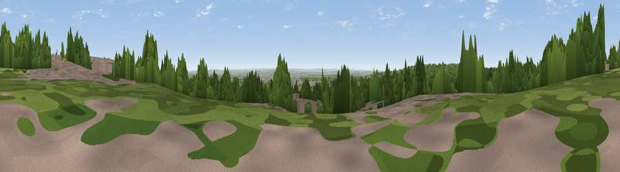

Viewpoint near Hampstead
#31285 in England · top 13% of its area beats it · near HampsteadThe view, rendered

A 360° render of this exact spot computed from the terrain model, tree cover and land cover — summer colours, afternoon light, calibrated against photographs of famous viewpoints. Real trees, hedges and buildings will differ in detail.
The panorama
Grey silhouette: terrain skyline in each direction (720 bearings, Earth curvature and refraction included). Dashed green: skyline with trees (+15 m) and buildings (+8 m) as obstacles. Blue strip: how far the ground is visible on each bearing.
Where the view opens
Wedge length = distance to the farthest visible ground on that bearing (vegetation-aware). Rings at 10, 25 and 50 km.
What fills the view
44% woodland · 35% built-up · 19% grassland · 1% water ·
Angular shares of the visible panorama (visual magnitude), not map area. Landscape diversity 0.50 (0–1 Shannon).
Key numbers
More beautiful places nearby
The staircase of upgrades: each row has a higher view potential than everything closer. Driving times are estimates from straight-line distance, calibrated against real road routing — check an actual route before setting out.
| Place | Direction | Drive | Score |
|---|---|---|---|
| Viewpoint near East Finchley | E · 1 km | ~3 min | 51.0 |
| Viewpoint near Wood Green | NNE · 3 km | ~8 min | 51.8 |
| Harrow on the Hill | W · 13 km | ~24 min | 60.7 |
| Viewpoint near Chaldon | S · 33 km | ~51 min | 66.7 |
| Viewpoint near Caterham Valley | S · 34 km | ~52 min | 68.0 |
| Box Hill | SSW · 36 km | ~55 min | 70.4 |
| Viewpoint near Box Hill Village | SSW · 37 km | ~55 min | 71.0 |
| Beacon Hill | NW · 44 km | ~64 min | 74.1 |
51.56933, -0.15128 · source: screening · position refined by local search. Computed location — check access rights before visiting.